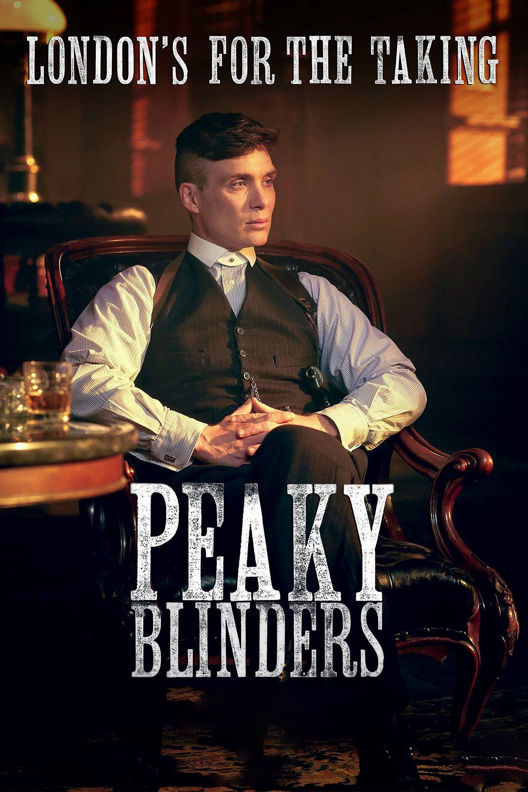

Острые козырьки

soundtracks
 Трейлер (сезон 3; русский язык)
9 июля 2016
Трейлер (сезон 3; русский язык)
9 июля 2016
Трейлер (сезон 3; русский язык)
1:56
Если вам понравился этот сериал
Знаете похожие фильмы?


Знаете ли вы, что...
- Значительную часть саундтрека сериала составляют композиции исполнительницы «Пи Джей Харви» и групп «Ник Кейв & The Bad Seeds», «Arctic Monkeys», «Royal Blood», «The Black Keys» и «The White Stripes».
- Сериал нередко критикуют за якобы неправильный акцент персонажей. Считается, что в Бирмингеме 1920-х годов говорили не так, как в наше время. Хелен МакКрори, сыгравшая в сериале тётю Полли, заявила, что произношение и выговор персонажей сериала соответствуют бирмингемскому диалекту 1920-х годов. Но зрители Великобритании подозревают, что выговор и произношение были намеренно сглажены для удобства восприятия сериала в Соединённых Штатах.
- Съёмки проходили в основном в Ливерпуле, в графстве Мерсисайд и в Лондоне. По возможности съёмки организовывали в Бирмингеме и графстве Уэст-Мидлендс (например, в музее под открытым небом в Дадли), однако к настоящему времени в Бирмингеме осталось слишком мало мест, хотя бы отдалённо напоминающих себя в 1920-х.
- Пол Андерсон играет старшего брата героя Киллиана Мёрфи. Однако в жизни Мёрфи старше Андерсона на полтора года.
Острые Козырьки (сериал 2013 – ... )
Peaky Blinders
16+
Криминальная сага в стиле ретро о банде и её лютом боссе. Так популярна, что повысила продажи головных уборов
Британский сериал о криминальном мире Бирмингема 20-х годов прошлого века, в котором многолюдная семья Шелби стала одной из самых жестоких и влиятельных гангстерских банд послевоенного времени. Фирменным знаком группировки, промышлявшей грабежами и азартными играми, стали зашитые в козырьки лезвия.
Рейтинг сериала
- 8.4 171K
70 рецензий
Аудиодорожки
Русский, Русский (Кубик в Кубе 18+), Английский
Субтитры
Русские, Английские
Качество видео
HD
О сериале
- 2013 (7 сезона)
- Великобритания
- драма, криминал
- Колм МакКарти, Тим Милантс...
- Стивен Найт, Тоби Финлэй, Стивен Расселл
- Кэрин Мэндабах, Джули Бринкман...
- Джордж Стил, Саймон Дэннис, Лори Роуз...
- Мартин Фипп, Пол Хартнолл...
- Грант Монтгомери, Ричард Буллок...
- Марк Дэвис, Пол Найт, Селия Хэйнинг...
- 25 февраля 2016
- 12 сентября 2013
- 30 сентября 2014, «Netflix»
- 60 мин.